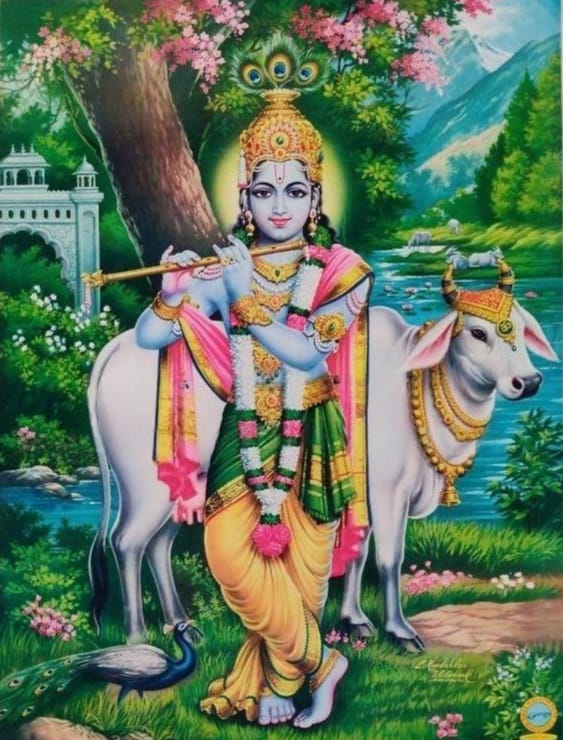

॥ॐ॥
वसुदेवसुतं देवं कंसचाणूरमर्दनम् ।
देवकी परमानन्दं कृष्णं वन्दे जगद्गुरुम् ॥
Shrimad Bhagwatam - Book 1
Canto 10
Chapter 41
Entry of Krishna and Balarama into Mathura
श्रीमद्भागवतमहापुराणम्
दशमः स्कन्धः
पुरप्रवेशो नाम एकचत्वारिंशः अध्यायः

(52 Shlokas)
श्री शुक उवाच
स्तुवतस्तस्य भगवान् दर्शयित्वा जले वपुः ।
भूयः समाहरत् कृष्णो नटो नाट्यमिवात्मनः॥10.41.1॥
Word-by-word meaning: श्री शुकः उवाच Shri Shuka said, स्तुवतः of the one offering prayers, तस्य his, भगवान् the Supreme Lord, दर्शयित्वा having shown, जले in the water, वपुः His form, भूयः again, समाहरत् withdrew, कृष्णः Krishna, नटः an actor, नाट्यम् a performance, इव like, आत्मनः His own
Anvaya: श्री शुकः उवाच — भगवान् कृष्णः जले तस्य स्तुवतः आत्मनः वपुः दर्शयित्वा नटः नाट्यम् इव भूयः समाहरत्।
Literal meaning of the anvaya: श्री शुकः उवाच Shri Shuka said, भगवान् कृष्णः the Supreme Lord Krishna, जले in the water, तस्य स्तुवतः to him who was offering prayers, आत्मनः वपुः His own form, दर्शयित्वा having shown, नटः नाट्यम् इव like an actor (concluding) a performance, भूयः समाहरत् withdrew it again.
Simple Meaning: Shri Shuka said: After showing His divine form in the water to Akrura while he was offering prayers, Lord Krishna withdrew that vision, just as an actor brings his performance to a close.
सोऽपि चान्तर्हितं वीक्ष्य जलादुन्मज्ज्य सत्वरः ।
कृत्वा चावश्यकं सर्वं विस्मितो रथमागमत् ॥10.41.2॥
Word-by-word meaning: सः He (Akrura), अपि च and also, अन्तर्हितम् disappeared/withdrawn, वीक्ष्य seeing, जलात् from the water, उन्मज्ज्य coming out/emerging, सत्वरः quickly, कृत्वा having performed, च and, आवश्यकम् duties/rituals, सर्वम् all, विस्मितो astonished, रथम् to the chariot, आगमत् returned
Anvaya: सः अपि च (तत् वपुः) अन्तर्हितं वीक्ष्य जलात् सत्वरः उन्मज्ज्य सर्वम् आवश्यकं च कृत्वा विस्मितः रथम् आगमत्।
Literal meaning of the anvaya: सः अपि च And he also, अन्तर्हितं वीक्ष्य seeing (that form) disappeared, जलात् from the water, सत्वरः उन्मज्ज्य emerging quickly, सर्वम् आवश्यकं च कृत्वा and having performed all his required morning rituals, विस्मितः filled with wonder, रथम् आगमत् returned to the chariot.
Simple Meaning: Seeing that the divine vision had disappeared, Akrura quickly came out of the water. After completing all his mandatory morning rituals, he returned to the chariot, completely filled with wonder.
तमपृच्छत् हृषीकेशः किं ते दृष्टमिवाद्भुतम् ।
भूमौ वियति तोये वा तथा त्वां लक्षयामहे ॥10.41.3॥
Word-by-word meaning: तम् him (Akrura), अपृच्छत् asked, हृषीकेशः Hrishikesha (Krishna), किम् what, ते by you, दृष्टम् seen, इव as if, अद्भुतम् wonderful/miraculous, भूमौ on the earth, वियति in the sky, तोये in the water, वा or, तथा such, त्वाम् you, लक्षयामहे we perceive
Anvaya: हृषीकेशः तम् अपृच्छत् — भूमौ वियति तोये वा ते किम् अद्भुतं दृष्टम् इव (अस्ति)? तथा त्वां लक्षयामहे।
Literal meaning of the anvaya: हृषीकेशः तम् अपृच्छत् Lord Krishna asked him, भूमौ on the earth, वियति in the sky, तोये वा or in the water, ते किम् अद्भुतं दृष्टम् इव has something wonderful been seen by you, तथा त्वां लक्षयामहे for we perceive you to be in such a state.
Simple Meaning: Lord Krishna asked Akrura: Have you seen something wonderful on the earth, in the sky, or in the water? We perceive you to be in such a state of amazement.
अक्रूर उवाच
अद्भुतानीह यावन्ति भूमौ वियति वा जले ।
त्वयि विश्वात्मके तानि किं मेऽदृष्टं विपश्यतः ॥10.41.4॥
Word-by-word meaning: अक्रूरः उवाच Akrura said, अद्भुतानि wonders/miracles, इह in this world, यावन्ति whatever, भूमौ on the earth, वियति in the sky, वा or, जले in the water, त्वयि in You, विश्व-आत्मके the soul of the universe, तानि all of them, किम् what, मे by me, अदृष्टम् unseen, विपश्यतः who am seeing
Anvaya: अक्रूरः उवाच — विश्वात्मके त्वयि भूमौ वियति वा जले इह यावन्ति अद्भुतानि (सन्ति), तानि (सर्वणि) विपश्यतः मे किम् अदृष्टम् (अस्ति)?
Literal meaning of the anvaya: अक्रूरः उवाच Akrura said, विश्वात्मके त्वयि in You, who are the soul of the universe, भूमौ on the earth, वियति in the sky, वा जले or in the water, इह यावन्ति अद्भुतानि whatever wonders exist in this world, तानि सर्वणि all of them, विपश्यतः मे to me who am seeing (You), किम् अदृष्टम् what remains unseen?
Simple Meaning: Akrura said: O Soul of the universe, since all the wonders that exist on the earth, in the sky, or in the water are contained within You, what could possibly remain unseen to me when I am looking directly at You?
यत्राद्भुतानि सर्वाणि भूमौ वियति वा जले ।
तं त्वानुपश्यतो ब्रह्मन् किं मे दृष्टमिहाद्भुतम् ॥10.41.5॥
Word-by-word meaning: यत्र in whom, अद्भुतानि wonders, सर्वाणि all, भूमौ on the earth, वियति in the sky, वा or, जले in the water, तम् Him, त्वा You, अनुपश्यतः who am beholding, ब्रह्मन् O Supreme Truth, किम् what, मे by me, दृष्टम् seen, इह in this world, अद्भुतम् wonder
Anvaya: ब्रह्मन्! भूमौ वियति वा जले सर्वाणि अद्भुतानि यत्र (सन्ति), तं त्वा अनुपश्यतः मे इह किम् अद्भुतं दृष्टम् (अभवत्)?
Literal meaning of the anvaya: ब्रह्मन् O Supreme Brahman, भूमौ वियति वा जले on the earth, in the sky, or in the water, सर्वाणि अद्भुतानि यत्र all wonders exist in whom, तं त्वा You, that very person, अनुपश्यतः मे to me who am beholding, इह किम् अद्भुतं दृष्टम् what separate wonder has been seen by me in this world?
Simple Meaning: O Supreme Truth, since all the wonders of the earth, sky, and water exist within You, what other wonder could I possibly behold in this world when I am already looking directly at You?
इत्युक्त्वा चोदयामास स्यन्दनं गान्दिनीसुतः ।
मथुरामनयद् रामं कृष्णं चैव दिनात्यये ॥10.41.6॥
Word-by-word meaning: इति thus, उक्त्वा having said, चोदयामास drove/impelled, स्यन्दनम् the chariot, गान्दिनी-सुतः the son of Gandini (Akrura’s mother), मथुराम् to Mathura, अनयत् brought, रामम् Balarama, कृष्णम् Krishna, च एव and also, दिन-अत्यये at the end of the day
Anvaya: गान्दिनीसुतः इति उक्त्वा स्यन्दनं चोदयामास, दिनात्यये च रामं कृष्णम् एव च मथुराम् अनयत्।
Literal meaning of the anvaya: गान्दिनीसुतः Akrura, the son of Gandini, इति उक्त्वा having spoken thus, स्यन्दनं चोदयामास drove the chariot forward, दिनात्यये च and at the end of the day, रामं कृष्णम् एव च Balarama and Krishna also, मथुराम् अनयत् brought to Mathura.
Simple Meaning: Having spoken these words, Akrura, the son of Gandini (name of Akrura’s mother), drove the chariot forward. By the end of the day, he arrived in Mathura, bringing Lord Krishna and Balarama with him.
मार्गे ग्रामजना राजंस्तत्र तत्रोपसंगताः ।
वसुदेवसुतौ वीक्ष्य प्रीता दृष्टिं न चाददुः ॥10.41.7॥
Word-by-word meaning: मार्गे on the road, ग्रामजनाः the village people, राजन् O King (Parikshit), तत्र तत्र here and there/at various places, उपसंगताः coming together/gathering, वसुदेव-सुतौ the two sons of Vasudeva (Krishna and Balarama), वीक्ष्य seeing/beholding, प्रीताः pleased/delighted, दृष्टिम् their vision/gaze, न not, च and, आददुः took away/withdrew
Anvaya: राजन्! मार्गे तत्र तत्र उपसंगताः ग्रामजनाः वसुदेवसुतौ वीक्ष्य प्रीताः (सन्तः) दृष्टिं न च आददुः।
Literal meaning of the anvaya: राजन् O King, मार्गे on the road, तत्र तत्र उपसंगताः gathered here and there, ग्रामजनाः the village people, वसुदेवसुतौ वीक्ष्य seeing the two sons of Vasudeva, प्रीताः delighted, दृष्टिं न च आददुः did not take away their gaze.
Simple Meaning: O King, the village people gathered at various places along the road. Upon beholding the two sons of Vasudeva, they were so deeply delighted that they could not withdraw their eyes from Them.
तावत् व्रजौकसस्तत्र नन्दगोपादयोऽग्रतः ।
पुरोपवनमासाद्य प्रतीक्षन्तोऽवतस्थिरे ॥10.41.8॥
Word-by-word meaning: तावत् meanwhile, व्रजौकसः the residents of Vraja, तत्र there, नन्दगोपादयोः Nanda Gopa and others, अग्रतः ahead/in advance, पुर-उपवनम् the suburban garden/park of the city, आसाद्य having reached, प्रतीक्षन्तः waiting for, अवतस्थिरे stayed/halted
Anvaya: तावत् नन्दगोपादयोः व्रजौकसः अग्रतः पुरोपवनम् आसाद्य तत्र प्रतीक्षन्तः अवतस्थिरे।
Literal meaning of the anvaya: तावत् Meanwhile, नन्दगोपादयोः व्रजौकसः the residents of Vraja led by Nanda Gopa, अग्रतः in advance, पुरोपवनम् आसाद्य having reached the garden on the outskirts of the city, तत्र प्रतीक्षन्तः अवतस्थिरे halted there waiting (for Krishna and Akrura).
Simple Meaning: Meanwhile, the residents of Vraja, led by Nanda Baba, had arrived ahead of them. Having reached a garden on the outskirts of the city, they halted there and waited for Krishna's arrival.
तान् समेत्याह भगवानक्रूरं जगदीश्वरः ।
गृहीत्वा पाणिना पाणिं प्रश्रितं प्रहसन्निव ॥10.41.9॥
Word-by-word meaning: तान् them (Nanda and the cowherds), समेत्य meeting/joining, आह said, भगवान् the Supreme Lord, अक्रूरम् to Akrura, जगदीश्वरः the master of the universe, गृहीत्वा taking/holding, पाणिना with His hand, पाणिम् the hand (of Akrura), प्रश्रितम् who was humble/submissive, प्रहसन् smiling, इव as if
Anvaya: जगदीश्वरः भगवान् तान् समेत्य प्रश्रितं अक्रूरं पाणिना पाणिं गृहीत्वा प्रहसन् इव आह।
Literal meaning of the anvaya: जगदीश्वरः भगवान् The Supreme Lord, the master of the universe, तान् समेत्य having joined them, प्रश्रितं अक्रूरं to the humble Akrura, पाणिना पाणिं गृहीत्वा holding his hand with His own hand, प्रहसन् इव as if smiling, आह said.
Simple Meaning: Having joined Nanda Maharaja and the other cowherds, the Supreme Lord, the master of the universe, took the hand of the humble Akrura into His own and spoke to him with a gentle smile.
भवान् प्रविशतामग्रे सहयानः पुरीं गृहम् ।
वयं त्विहावमुच्याथ ततो द्रक्ष्यामहे पुरीम् ॥10.41.10॥
Word-by-word meaning: भवान् you, प्रविशताम् please enter, अग्रे ahead/first, सह-यानः with the chariot, पुरीम् the city, गृहम् your home, वयम् we, तु but, इह here, अवमुच्य unyoking/camping, अथ then, ततः after that, द्रक्ष्यामहे will see, पुरीम् the city
Anvaya: सहयानः भवान् अग्रे पुरीं गृहं प्रविशताम्; वयं तु इह अवमुच्य अथ ततः पुरीं द्रक्ष्यामहे।
Literal meaning of the anvaya: सहयानः भवान् You, with the chariot, अग्रे first, पुरीं गृहं प्रविशताम् please enter the city and go to your home, वयं तु but we, इह अवमुच्य unyoking (our carts) here, अथ ततः and after that, पुरीं द्रक्ष्यामहे will see the city.
Simple Meaning: Lord Krishna said: You may proceed ahead into the city with your chariot and go to your home. We, however, will camp right here, and later we will enter to see the city.
अक्रूर उवाच
नाहं भवद्भ्यां रहितः प्रवेक्ष्ये मथुरां प्रभो ।
त्यक्तुं नार्हसि मां नाथ भक्तं ते भक्तवत्सल ॥10.41.11॥
Word-by-word meaning: अक्रूरः उवाच Akrura said, न not, अहम् I, भवद्भ्याम् of both of You, रहितः bereft/without, प्रवेक्ष्ये will enter, मथुराम् Mathura, प्रभो O Lord, त्यक्तुम् to abandon/leave behind, न अर्हसि you should not, माम् me, नाथ O Master, भक्तम् devotee, ते Your, भक्तवत्सल O You who are affectionate to Your devotees
Anvaya: अक्रूरः उवाच — प्रभो! अहं भवद्भ्यां रहितः मथुरां न प्रवेक्ष्ये; नाथ! भक्तवत्सल! ते भक्तं मां त्यक्तुं न अर्हसि।
Literal meaning of the anvaya: अक्रूरः उवाच Akrura said, प्रभो O Lord, अहं I, भवद्भ्यां रहितः without both of You, मथुरां न प्रवेक्ष्ये will not enter Mathura. नाथ O Master, भक्तवत्सल O You who are affectionate to Your devotees, ते भक्तं मां me, Your devotee, त्यक्तुं न अर्हसि You should not abandon.
Simple Meaning: Akrura said: O Lord, I will not enter Mathura without the two of You. O Master, O Protector of the surrendered, You should not abandon me, for I am Your devoted servant.
आगच्छ याम गेहान् नः सनाथान् कुर्वधोक्षज ।
सहाग्रजः सगोपालैः सुहृद्भिश्च सुहृत्तम ॥10.41.12॥
Word-by-word meaning: आगच्छ please come, याम let us go, गेहान् to the houses, नः our, स-नाथान् master-filled/blessed with a guardian, कुरु make, अधोक्षज O Adhokshaja (beyond material senses), सह-अग्रजः along with Your elder brother (Balarama), स-गोपालैः along with the cowherd boys, सुहृद्भिः च and with Your friends, सुहृत्तम O best of friends
Anvaya: सुहृत्तम! अधोक्षज! सहाग्रजः सगोपालैः सुहृद्भिः च आगच्छ, नः गेहान् सनाथान् कुरु, (वयम्) याम।
Literal meaning of the anvaya: सुहृत्तम O best of friends, अधोक्षज O Lord beyond material senses, सहाग्रजः along with Your elder brother, सगोपालैः सुहृद्भिः च and along with the cowherds and Your friends, आगच्छ please come, नः गेहान् our houses, सनाथान् कुरु make blessed with a master, (वयम्) याम let us go.
Simple Meaning: O best of friends, O transcendental Lord! Please come with us along with Your elder brother, the cowherd boys, and all Your companions. Let us go and bless our homes by Your presence as their true master.
पुनीहि पादरजसा गृहान् नो गृहमेधिनाम् ।
यच्छौचेनानुतृप्यन्ति पितरः साग्नयः सुराः ॥10.41.13॥
Word-by-word meaning: पुनीहि please purify, पाद-रजसा by the dust of Your feet, गृहान् the houses, नः गृह-मेधिनाम् of us householders, यत्-शौचेन by the purification of which (dust), अनुतृप्यन्ति become satisfied, पितरः the forefathers, स-अग्नयः along with the sacrificial fires, सुराः the demigods
Anvaya: गृहमेधिनां नः गृहान् पादरजसा पुनीहि, यच्छौचेन साग्नयः पितरः सुराः (च) अनुतृप्यन्ति।
Literal meaning of the anvaya: गृहमेधिनां नः Of us householders, गृहान् the houses, पादरजसा पुनीहि please purify by the dust of Your feet, यच्छौचेन by the purification of which, साग्नयः पितरः the forefathers along with the sacrificial fires, सुराः च and the demigods, अनुतृप्यन्ति become thoroughly satisfied.
Simple Meaning: Please purify the homes of us householders with the dust of Your feet. By the purifying power of that sacred dust, our forefathers, the sacrificial fires, and the demigods all achieve complete satisfaction.
अवनिज्याङ्घ्रियुगलमासीच्छलोक्यो बलिर्महान् ।
ऐश्वर्यमतुलं लेभे गतिं चैकान्तिनां तु या ॥10.41.14॥
Word-by-word meaning: अवनिज्य having washed, अङ्घ्रि-युगलम् the pair of feet, आसीत् became, श्लोक्यः glorious/praiseworthy, बलिः Bali Maharaja, महान् the great, ऐश्वर्यम् opulence/sovereignty, अतुलम् incomparable, लेभे obtained, गतिम् the destination, च and, एकान्तिनाम् of the unalloyed/pure devotees, तु indeed, या which
Anvaya: महान् बलिः (तव) अङ्घ्रियुगलम् अवनिज्य श्लोक्यः आसीत्, अतुलम् ऐश्वर्यं लेभे, या तु एकान्तिनां गतिः (तां) च (लेभे)।
Literal meaning of the anvaya: महान् बलिः The great Bali Maharaja, अङ्घ्रियुगलम् अवनिज्य having washed Your pair of feet, श्लोक्यः आसीत् became glorious, अतुलम् ऐश्वर्यं लेभे obtained incomparable opulence, या तु एकान्तिनां गतिः and that which is indeed the destination of pure devotees, (तां) च (लेभे) that also he attained.
Simple Meaning: By washing Your pair of lotus feet, the great Bali Maharaja became completely glorious. He not only obtained incomparable material opulence, but he also attained that supreme destination which is reserved exclusively for Your unalloyed devotees.
आपस्तेऽङ्घ्र्यवनेजन्यस्त्रीँल्लोकाञ्छुचयोऽपुनन् ।
शिरसाधत्त याः शर्वः स्वर्याताः सगरात्मजाः ॥10.41.15॥
Word-by-word meaning: आपः the water, ते Your, अङ्घ्रि-अवनेजन्यः washed from Your feet, त्रीन्-लोकान् the three worlds, शुचयः pure, अपुनन् purified, शिरसा on his head, आधत्त sustained/bore, याः which, शर्वः Lord Shiva, स्वः heaven, याताः attained, सगर-आत्मजाः the sons of King Sagara
Anvaya: ते अङ्घ्र्यवनेजन्यः आपः त्रीन् लोकान् शुचयः (कृत्वा) अपुनन्, याः शर्वः शिरसा आधत्त, (याभिः च) सगरात्मजाः स्वः याताः।
Literal meaning of the anvaya: ते अङ्घ्र्यवनेजन्यः आपः The water washed from Your feet, त्रीन् लोकान् शुचयः (कृत्वा) making the three worlds pure, अपुनन् sanctified them, याः शर्वः शिरसा आधत्त which water Lord Shiva bore upon his head, (याभिः च) and by which water, सगरात्मजाः the sons of King Sagara, स्वः याताः attained heaven.
Simple Meaning: The water that washed Your feet has sanctified all the three worlds by making them pure. It is this very water that Lord Shiva bore reverently upon his head, and it is by this same water that the deceased sons of King Sagara were delivered and attained heaven.
देव देव जगन्नाथ पुण्यश्रवणकीर्तन ।
यदूत्तमोत्तमश्लोक नारायण नमोऽस्तु ते ॥10.41.16॥
Word-by-word meaning: देव देव O God of gods, जगन्नाथ O Lord of the universe, पुण्य-श्रवण-कीर्तन O You whose hearing and chanting are meritorious, यदु-उत्तम O best of the Yadus, उत्तम-श्लोक O Lord praised with choice poetry, नारायण O Narayana, नमः obeisances, अस्तु let there be, ते unto You
Anvaya: देवदेव! जगन्नाथ! पुण्यश्रवणकीर्तन! यदूत्तम! उत्तमश्लोक! नारायण! ते नमः अस्तु।
Literal meaning of the anvaya: देवदेव O God of gods, जगन्नाथ O Lord of the universe, पुण्यश्रवणकीर्तन O You whose hearing and chanting bring merit, यदूत्तम O best of the Yadus, उत्तमश्लोक O Lord praised with choice poetry, नारायण O Narayana, ते नमः अस्तु let my obeisances be unto You.
Simple Meaning: O God of gods, O Lord of the universe! O You whose glories bring piety to whoever hears and chants them! O best of the Yadus, O praised with sublime poetry, O Narayana, I offer my respectful obeisances unto You.
श्री भगवान् उवाच
आयास्ये भवतो गेहमहमार्यसमन्वितः ।
यदुचक्रद्रुहं हत्वा वितरिष्ये सुहृत्प्रियम् ॥10.41.17॥
Word-by-word meaning: श्री भगवान् उवाच The Supreme Lord said, आयास्ये I will come, भवतः your, गेहम् to the house, अहम् I, आर्य-समन्वितः accompanied by my elder brother (Balarama), यदु-चक्र-द्रुहम् the enemy of the Yadu dynasty (Kamsa), हत्वा having killed, वितरिष्ये I will fulfill, सुहृत्-प्रियम् the desires of my friends
Anvaya: श्री भगवान् उवाच — आर्यसमन्वितः अहं भवतः गेहम् आयास्ये, यदुचक्रद्रुहं हत्वा सुहृत्प्रियं वितरिष्ये।
Literal meaning of the anvaya: श्री भगवान् उवाच The Supreme Lord said, आर्यसमन्वितः अहं I, accompanied by my elder brother, भवतः गेहम् आयास्ये will come to your house, यदुचक्रद्रुहं हत्वा having killed the enemy of the Yadu dynasty, सुहृत्प्रियं वितरिष्ये I will fulfill the desires of my friends.
Simple Meaning: The Supreme Lord said: I will certainly come to your house accompanied by my elder brother Balarama. Having slain Kamsa, the bitter enemy of the Yadu dynasty, I shall fulfill the wishes of all my well-wishers and friends.
श्री शुक उवाच
एवमुक्तो भगवता सोऽक्रूरो विमना इव ।
पुरीं प्रविष्टः कंसाय कर्मावेद्य गृहं ययौ ॥10.41.18॥
Word-by-word meaning: श्री शुकः उवाच Shri Shuka said, एवम् thus, उक्तः addressed, भगवता by the Supreme Lord, सः that, अक्रूरः Akrura, विमनाः downcast/disappointed, इव as if, पुरीम् the city (of Mathura), प्रविष्टः entering, कंसाय to Kamsa, कर्म the activity/accomplishment of his mission, अवेद्य having reported, गृहम् to his home, ययौ went
Anvaya: श्री शुकः उवाच — भगवता एवम् उक्तः सः अक्रूरः विमनाः इव पुरीं प्रविष्टः, कंसाय कर्म अवेद्य गृहं ययौ।
Literal meaning of the anvaya: श्री शुकः उवाच Shri Shuka said, भगवता एवम् उक्तः addressed in this manner by the Supreme Lord, सः अक्रूरः that Akrura, विमनाः इव as if heavy-hearted, पुरीं प्रविष्टः entered the city, कंसाय कर्म अवेद्य having informed Kamsa of his executed mission, गृहं ययौ went to his own home.
Simple Meaning: Shri Shuka said: Addressed in this manner by the Supreme Lord, Akrura felt somewhat disappointed. He entered the city of Mathura, reported the completion of his mission to King Kamsa, and then retired to his own home.
अथापराह्णे भगवान् कृष्णः सङ्कर्षणान्वितः ।
मथुरां प्राविशद् गोपैर्दिदृक्षुः परिवारितः ॥10.41.19॥
Word-by-word meaning: अथ then/subsequently, अपराह्णे in the afternoon, भगवान् the Supreme Lord, कृष्णः Krishna, सङ्कर्षण-अन्वितः accompanied by Sankarshana (Balarama), मथुराम् Mathura, प्राविशत् entered, गोपैः by the cowherd boys, दिदृक्षुः desiring to see (the city), परिवारितः surrounded
Anvaya: अथ अपराह्णे (मथुरां) दिदृक्षुः सङ्कर्षणान्वितः भगवान् कृष्णः गोपैः परिवारितः (सन्) मथुरां प्राविशत्।
Literal meaning of the anvaya: अथ Then, अपराह्णे in the afternoon, दिदृक्षुः desiring to see the city, सङ्कर्षणान्वितः accompanied by Balarama, भगवान् कृष्णः the Supreme Lord Krishna, गोपैः परिवारितः surrounded by the cowherd boys, मथुरां प्राविशत् entered Mathura.
Simple Meaning: Then, in the afternoon, the Supreme Lord Krishna, accompanied by Balarama and surrounded by the cowherd boys, entered Mathura out of a desire to see the city.
ददर्श तां स्फाटिकतुङ्गगोपुरद्वारां बृहद्धेमकपाटतोरणाम् ।
ताम्रारकोष्ठां परिखादुरासदामुद्यानरम्योपवनोपशोभिताम् ॥10.41.20॥
Word-by-word meaning: ददर्श He saw, ताम् that (city of Mathura), स्फाटिक-तुङ्ग-गोपुर-द्वाराम् with high gates made of crystal, बृहत्-हेम-कपाट-तोरणाम् with large golden doors and arches, ताम्र-आर-कोष्ठाम् with storehouses and granaries made of copper and brass, परिखा-दुरासदाम् difficult to approach/impregnable because of its moats, उद्यान-रम्य-उपवन-उपशोभिताम् beautified by pleasure gardens and charming parks
Anvaya: (सः) स्फाटिकतुङ्गगोपुरद्वारां बृहद्धेमकपाटतोरणां ताम्रारकोष्ठां परिखादुरासदाम् उद्यानरम्योपवनोपशोभितां तां (मथुरां) ददर्श।
Literal meaning of the anvaya: (सः) He (Lord Krishna), स्फाटिकतुङ्गगोपुरद्वारां which had high gateway towers made of crystal, बृहद्धेमकपाटतोरणां with massive golden doors and triumphal arches, ताम्रारकोष्ठां with storehouses made of copper and brass, परिखादुरासदाम् made unassailable by its surrounding moats, उद्यानरम्योपवनोपशोभितां तां and adorned with beautiful gardens and enchanting orchards, (मथुरां) ददर्श saw that city of Mathura.
Simple Meaning: Lord Krishna beheld the city of Mathura, which featured towering gateway entrances crafted from brilliant crystal, massive golden doors, and ornamental arches. Its storehouses and fortifications were built of copper and brass, its deep moats made it virtually impregnable, and the entire city was beautifully adorned with charming public gardens and orchards.
सौवर्णशृङ्गाटकहर्म्यनिष्कुटैः श्रेणीसभाभिर्भवनैरुपस्कृताम् ।
वैदूर्यवज्रामलनीलविद्रुमैर्मुक्ताहरिद्भिर्वलभीषु वेदिषु ॥10.41.21॥
Word-by-word meaning: सौवर्ण-शृङ्ग-अटक-हर्म्य-निष्कुटैः with golden crossroads, mansions, and private pleasure gardens, श्रेणी-सभाभिः by the assembly halls of various guilds/artisans, भवनैः by the residential palaces, उपस्कृताम् adorned/enriched, वैदूर्य-वज्र-अमल-नील-विद्रुमैः with cat's-eye gems, diamonds, spotless sapphires, and coral, मुक्ता-हरिद्भिः with pearls and emeralds, वलभीषु on the sloping roofs/eaves, वेदिषु on the raised platforms/patios
Anvaya: सौवर्णशृङ्गाटकहर्म्यनिष्कुटैः श्रेणीसभाभिः भवनैः (च) उपस्कृतां, वलभीषु वेदिषु (च) वैदूर्यवज्रामलनीलविद्रुमैः मुक्ताहरिद्भिः (च युक्तां तां पुरीं ददर्श)।
Literal meaning of the anvaya: सौवर्णशृङ्गाटकहर्म्यनिष्कुटैः श्रेणीसभाभिः भवनैः च उपस्कृतां Adorned with golden crossroads, palatial mansions, and private gardens, and with the assembly halls of trade guilds and grand palaces, वलभीषु वेदिषु च and upon whose sloping roofs and raised platforms, वैदूर्यवज्रामलनीलविद्रुमैः मुक्ताहरिद्भिः च (studded with) cat's-eye gems, diamonds, pure sapphires, coral, pearls, and emeralds (He saw that city).
Simple Meaning: (Lord Krishna saw the city) which was beautifully adorned with golden crossroads, magnificent mansions, private pleasure gardens, assembly halls for trade guilds, and stately palaces. Furthermore, the sloping eaves and raised balconies of these buildings were exquisitely studded with precious cat's-eye gems, diamonds, spotless sapphires, coral, pearls, and emeralds.
जुष्टेषु जालामुखरन्ध्रकुट्टिमेष्वाविष्टपारावतबर्हिनादिताम् ।
संसिक्तरथ्यापणमार्गचत्वरां प्रकीर्णमाल्याङ्कुरलाजतण्डुलाम् ॥10.41.22॥
Word-by-word meaning: जुष्टेषु which were occupied/frequented, जालामुख-रन्ध्र-कुट्टिमेषु on the latticed windows, openings, and inlaid floors, आविष्ट-पारावत-बर्हि-नादिताम् filled with the cooing and crying of nested pigeons and peacocks, संसिक्त-रथ्या-आपण-मार्ग-चत्वराम् with thoroughly sprinkled main roads, marketplaces, lanes, and crossroads, प्रकीर्ण-माल्य-अङ्कुर-लाज-तण्डुलाम् strewn with flower garlands, fresh sprouts, parched grains, and sacred rice grains
Anvaya: जालामुखरन्ध्रकुट्टिमेषु जुष्टेषु आविष्टपारावतबर्हिनादितां, संसिक्तरथ्यापणमार्गचत्वरां, प्रकीर्णमाल्याङ्कुरलाजतण्डुलां (तां पुरीं ददर्श)।
Literal meaning of the anvaya: जालामुखरन्ध्रकुट्टिमेषु जुष्टेषु Frequented on the latticed windows, air-holes, and jeweled floors, आविष्टपारावतबर्हिनादितां filled with the sounds of settled pigeons and peacocks, संसिक्तरथ्यापणमार्गचत्वरां whose avenues, commercial markets, side streets, and public squares were thoroughly washed with water, प्रकीर्णमाल्याङ्कुरलाजतण्डुलां and which was strewn with decorative flower garlands, green sprouts, parched grains, and unbroken rice (He saw that city).
Simple Meaning: (Lord Krishna saw the city) echoing with the pleasant cooing of pet pigeons and the cries of peacocks resting on the jeweled floors, latticed windows, and ventilation openings of the mansions. The main boulevards, busy marketplaces, narrow lanes, and town squares had all been freshly sprinkled with water, and the ground was beautifully strewn with welcoming flower garlands, auspicious grains, parched rice, and tender sprouts.
आपूर्णकुम्भैर्दधिचन्दनोक्षितैः प्रसूनदीपावलिभिः सपल्लवैः ।
सवृन्दरम्भाक्रमुकैः सकेतुभिः स्वलङ्कृतद्वारगृहां सपट्टिकैः ॥10.41.23॥
Word-by-word meaning: आपूर्ण-कुम्भैः with completely filled waterpots, दधि-चन्दन-उक्षितैः smeared/sprinkled with yogurt and sandalwood paste, प्रसून-दीपावलिभिः with clusters of flowers and rows of lamps, स-पल्लवैः along with fresh tree leaves, स-वृन्द-रम्भा-क्रमुकैः with uprooted banana trees laden with clusters of fruit and betel-nut trees, स-केतुभिः with flags, सु-अलङ्कृत-द्वार-गृहाम् whose doorways and houses were beautifully decorated, स-पट्टिकैः with silken ribbons/banners
Anvaya: दधिचन्दनोक्षितैः आपूर्णकुम्भैः, प्रसूनदीपावलिभिः, सपल्लवैः सवृन्दरम्भाक्रमुकैः, सकेतुभिः सपट्टिकैः (च) स्वलङ्कृतद्वारगृहां (तां पुरीं ददर्श)।
Literal meaning of the anvaya: दधिचन्दनोक्षितैः आपूर्णकुम्भैः With full waterpots smeared with yogurt and sandalwood paste, प्रसूनदीपावलिभिः with flower garlands and rows of lamps, सपल्लवैः सवृन्दरम्भाक्रमुकैः with fresh leaves along with bunches of banana trees and betel-nut trees, सकेतुभिः सपट्टिकैः च and with festive flags and silken banners, स्वलङ्कृतद्वारगृहां whose doorways and houses were beautifully decorated, (तां पुरीं ददर्श) (He saw that city).
Simple Meaning: (Lord Krishna saw the city) where the houses and their doorways were exquisitely decorated. They were adorned with full waterpots anointed with yogurt and sandalwood paste, rows of bright lamps, heaps of flowers, fresh green leaves, trunked banana plants bearing clusters of fruit, betel-nut trees, colorful flags, and streaming silken ribbons.
तां सम्प्रविष्टौ वसुदेवनन्दनौ वृतौ वयस्यैर्नरदेववर्त्मना ।
द्रष्टुं समीयुस्त्वरिताः पुरस्त्रियो हर्म्याणि चैवारुरुहुर्नृपोत्सुकाः ॥10.41.24॥
Word-by-word meaning: ताम् that (city), सम्प्रविष्टौ who had duly entered, वसुदेव-नन्दनौ the two sons of Vasudeva (Krishna and Balarama), वृतौ surrounded, वयस्यैः by their friends/cowherd companions, नरदेव-वर्त्मना on the royal road/king's highway, द्रष्टुम् to see (Them), समीयुः came together, त्वरिताः hurrying, पुर-स्त्रियः the women of the city, हर्म्याणि the palatial rooftops, च एव and certainly, आरुरुहुः climbed up, नृप O King Parikshit, उत्सुकाः eager
Anvaya: नृप! नरदेववर्त्मना वयस्यैः वृतौ तां सम्प्रविष्टौ वसुदेवनन्दनौ द्रष्टुं पुरस्त्रियः त्वरिताः (सत्यः) समीयुः, उत्सुक्यः (सत्यः) हर्म्याणि च एव आरुरुहुः।
Literal meaning of the anvaya: नृप O King, नरदेववर्त्मना on the royal highway, वयस्यैः वृतौ surrounded by their friends, तां सम्प्रविष्टौ who had entered that city, वसुदेवनन्दनौ the two sons of Vasudeva, द्रष्टुं to see, पुरस्त्रियः the women of the city, त्वरिताः hurrying, समीयुः came together, उत्सुक्याः च एव and out of intense eagerness, हर्म्याणि आरुरुहुः climbed up to the palatial rooftops.
Simple Meaning: O King (Parikshit), as the two sons of Vasudeva entered the city via the royal highway surrounded by their cowherd friends, the women of Mathura hurried out in crowds to see Them. Filled with intense eagerness, they quickly climbed to the roofs of their palaces to get a clear view.
काश्चिद् विपर्यग्धृतवस्त्रभूषणा विस्मृत्य चैकं युगलेष्वथापराः ।
कृतैकपत्रश्रवणैकनूपुरा नाङ्क्त्वा द्वितीयं त्वपराश्च लोचनम् ॥10.41.25॥
Word-by-word meaning: काश्चित् some (women), विपर्यक्-धृत-वस्त्र-भूषणाः wearing their clothes and ornaments in reverse/upside down, विस्मृत्य having forgotten, च and, एकम् one, युगलेषु of the pairs, अथ then, अपराः others, कृत-एक-पत्र-श्रवण-एक-नूपुराः having put an earring on only one ear and an anklet on only one foot, न अङ्क्त्वा without applying collyrium (eyeliner), द्वितीयम् the second, तु indeed, अपराः च and still others, लोचनम् eye
Anvaya: काश्चित् विपर्यग्धृतवस्त्रभूषणाः (आसन्), अथ अपराः युगलेषु एकं विस्मृत्य (समीयुः), अपराः कृतैकपत्रश्रवणैकनूपुराः (आसन्), अपराः च द्वितीयं लोचनं न अङ्क्त्वा (समीयुः)।
Literal meaning of the anvaya: काश्चित् Some women, विपर्यग्धृतवस्त्रभूषणाः had put on their clothes and ornaments completely backward or in reverse, अथ अपराः then others, युगलेषु एकं विस्मृत्य forgetting one item out of pairs (of ornaments), (समीयुः) rushed forward; अपराः some, कृतैकपत्रश्रवणैकनूपुराः had placed an earring on only one ear and an anklet on only one foot, अपराः च and still others, द्वितीयं लोचनं न अङ्क्त्वा without applying collyrium to their second eye, (समीयुः) rushed out.
Simple Meaning: In their frantic haste to see Krishna, some of the ladies put their dresses and ornaments on backward. Others rushed out forgetting one half of a pair of jewelry; some managed to put an earring on only one ear and an anklet on only one foot, while others applied eyeliner to one eye and ran out before doing the second.
अश्नन्त्य एकास्तदपास्य सोत्सवा अभ्यज्यमाना अकृतोपमज्जनाः ।
स्वपन्त्य उत्थाय निशम्य निःस्वनं प्रपाययन्त्योऽर्भमपोह्य मातरः ॥10.41.26॥
Word-by-word meaning: अश्नन्त्यः eating, एकाः some (women), तत्-अपास्य leaving that aside, स-उत्सवाः full of festive excitement, अभ्यज्यमानाः being massaged with oil, अकृत-उपमज्जनाः without taking their bath, स्वपन्त्यः sleeping, उत्थाय getting up, निशम्य having heard, निःस्वनम् the tumultuous sound (of Krishna's arrival), प्रपाययन्त्यः suckling/feeding, अर्भम् a child, अपोह्य setting aside, मातरः the mothers
Anvaya: एकाः अश्नन्त्यः तत् अपास्य सोत्सवाः (समीयुः), अभ्यज्यमानाः अकृतोपमज्जनाः (धावन्ति स्म), स्वपन्त्यः निःस्वनं निशम्य उत्थाय (जग्मुः), (च) मातरः अर्भं प्रपाययन्त्यः (अपि तं) अपोह्य (समीयुः)।
Literal meaning of the anvaya: एकाः अश्नन्त्यः Some who were eating, तत् अपास्य leaving that food aside, सोत्सवाः filled with festive joy (rushed out); अभ्यज्यमानाः those who were being massaged with oil, अकृतोपमज्जनाः without finishing their bath (ran out); स्वपन्त्यः those who were sleeping, निःस्वनं निशम्य having heard the sound, उत्थाय woke up and (hurried off); च मातरः and mothers, अर्भं प्रपाययन्त्यः who were nursing a child, (तं) अपोह्य setting the child aside, (समीयुः) ran to see Him.
Simple Meaning: Some women who were dining abandoned their meals in excitement. Others who were in the middle of an oil massage ran out before taking their bath. Ladies who were fast asleep woke up and rushed out the moment they heard the commotion of His arrival, and nursing mothers abruptly set their babies aside to run and catch a glimpse of the Lord.
मनांसि तासामरविन्दलोचनः प्रगल्भलीलाहसितावलोकनैः ।
जहार मत्तद्विरदेन्द्रविक्रमो दृशां ददच्छ्रीरमणात्मनोत्सवम् ॥10.41.27॥
Word-by-word meaning: मनांसि the minds, तासाम् of those women, अरविन्द-लोचनः the lotus-eyed Lord, प्रगल्भ-लीला-हसित-अवलोकनैः with His bold, playful smiles and glances, जहार stole away, मत्त-द्विरद-इन्द्र-विक्रमः He whose gait is like that of an intoxicated lordly elephant, दृशाम् of their eyes, ददत् giving, श्री-रमण-आत्मना by His form which is the source of pleasure for the goddess of fortune, उत्सवम् a festival
Anvaya: मत्तद्विरदेन्द्रविक्रमः अरविन्दलोचनः (कृष्णः) प्रगल्भलीलाहसितावलोकनैः श्रीरमणात्मना तासां दृशां उत्सवं ददत् मनांसि जहार।
Literal meaning of the anvaya: मत्तद्विरदेन्द्रविक्रमः He who walks with the stride of an intoxicated lordly elephant, अरविन्दलोचनः the lotus-eyed Lord, प्रगल्भलीलाहसितावलोकनैः by His bold, playful smiles and side-long glances, श्रीरमणात्मना with His very person which is the source of pleasure for Goddess Lakshmi, तासां दृशां उत्सवं ददत् granting a festival to their eyes, मनांसि जहार captivated the minds of those women.
Simple Meaning: The lotus-eyed Lord, walking with the majestic grace of an intoxicated elephant, captivated the minds of all those women with His bold, playful smiles and enchanting glances. Displaying His divine form—the very source of delight for the goddess of fortune—He presented a spectacular festival to their eyes.
दृष्ट्वा मुहुःश्रुतमनुद्रुतचेतसस्तं तत्प्रेक्षणोत्स्मितसुधोक्षणलब्धमानाः ।
आनन्दमूर्तिमुपगुह्य दृशाऽऽत्मलब्धं हृष्यत्त्वचो जहुरनन्तमरिन्दमाधिम् ॥10.41.28॥
Word-by-word meaning: दृष्ट्वा having seen, मुहुः-श्रुत-अनुद्रुत-चेतसः those whose minds had repeatedly run to Him by constantly hearing about Him, तम् Him, तत्-प्रेक्षण-उत्स्मित-सुधा-उक्षण-लब्ध-मानाः receiving honor by being sprinkled with the nectar of His glances and gentle smiles, आनन्द-मूर्तिम् the embodiment of bliss, उपगुह्य embracing, दृशा through their eyes, आत्म-लब्धम् received into their hearts, हृष्यत्-त्वचः their hair standing on end with joy, जहुः they gave up, अनन्तम् endless, अरिन्दम O tamer of enemies, आधीम् mental distress
Anvaya: अरिन्दम! मुहुःश्रुतमनुद्रुतचेतसः (ताः) तम् आनन्दमूर्तिं दृष्ट्वा, तत्प्रेक्षणोत्स्मितसुधोक्षणलब्धमानाः (सत्यः), दृशा आत्मलब्धम् (तं) उपगुह्य, हृष्यत्त्वचः (सत्यः) अनन्तम् आधिं जहुः।
Literal meaning of the anvaya: अरिन्दम O subduer of enemies, मुहुःश्रुतमनुद्रुतचेतसः those women whose minds had repeatedly run to Him by constantly hearing about Him, तम् आनन्दमूर्तिं दृष्ट्वा seeing Him, the embodiment of bliss, तत्प्रेक्षणोत्स्मितसुधोक्षणलब्धमानाः feeling honored by being sprinkled with the nectar of His glances and smiles, दृशा आत्मलब्धम् उपगुह्य embracing Him through their eyes as He was received into their hearts, हृष्यत्त्वचः with their hair standing on end, अनन्तम् आधिं जहुः cast away their endless mental distress.
Simple Meaning: O subduer of enemies (King Parikshit), the women of the city, whose hearts had already rushed to Krishna from repeatedly hearing of His glories, now saw Him in person as the very embodiment of bliss. Feeling deeply honored to be sprinkled with the nectar of His smiling glances, they took Him in through their eyes and embraced Him within their hearts. With their hair standing on end in ecstasy, they completely forgot the endless mental distress of separation.
प्रासादशिखरारूढाः प्रीत्युत्फुल्लमुखाम्बुजाः ।
अभ्यवर्षन् सौमनस्यैः प्रमदा बलकेशवौ ॥10.41.29॥
Word-by-word meaning: प्रासाद-शिखर-आरूढाः having climbed to the roofs of the palaces, प्रीति-उत्फुल्ल-मुख-अम्बुजाः whose lotus-like faces bloomed with affection, अभ्यवर्षन् rained down, सौमनस्यैः with flowers (jasmine/blossoms), प्रमदाः the ecstatic women, बल-केशवौ upon Balarama and Krishna
Anvaya: प्रासादशिखरारूढाः प्रीत्युत्फुल्लमुखाम्बुजाः प्रमदाः बलकेशवौ सौमनस्यैः अभ्यवर्षन्।
Literal meaning of the anvaya: प्रासादशिखरारूढाः Having climbed to the roofs of the palaces, प्रीत्युत्फुल्लमुखाम्बुजाः whose lotus-like faces bloomed with love, प्रमदाः the overjoyed women, बलकेशवौ upon Balarama and Krishna, सौमनस्यैः अभ्यवर्षन् rained down flowers.
Simple Meaning: Having climbed to the roofs of the palaces, the overjoyed women of the city, whose lotus-like faces were fully blooming with affection, showered Balarama and Krishna with handfuls of fresh flowers.
दध्यक्षतैः सोदपात्रैः स्रग्गन्धैरभ्युपायनैः।
तावानर्चुः प्रमुदितास्तत्र तत्र द्विजातयः ॥10.41.30॥
Word-by-word meaning: दधि-अक्षतैः with yogurt and unbroken barley grains, स-उद-पात्रैः along with pots of water, स्रक्-गन्धैः with flower garlands and fragrant sandalwood paste, अभ्युपायनैः with various presentations/gifts, तौ those two (Krishna and Balarama), आनर्चुः worshipped, प्रमुदिताः joyfully, तत्र तत्र here and there, द्विजातयः the brahmanas
Anvaya: तत्र तत्र प्रमुदिताः द्विजातयः दध्यक्षतैः सोदपात्रैः स्रग्गन्धैः अभ्युपायनैः (च) तौ आनर्चुः।
Literal meaning of the anvaya: तत्र तत्र Here and there, प्रमुदिताः द्विजातयः the joyful brahmanas, दध्यक्षतैः सोदपात्रैः with yogurt, unbroken grains, and pots of water, स्रग्गन्धैः अभ्युपायनैः च and with flower garlands, sandalwood paste, and sacrificial gifts, तौ आनर्चुः worshipped them both.
Simple Meaning: At various places along the way, joyful brahmanas came forward to worship Krishna and Balarama, honoring Them with offerings of yogurt, unbroken grains, pots of water, flower garlands, fragrant paste, and traditional gifts.
ऊचुः पौरा अहो गोप्यस्तपः किमचरन् महत् ।
या ह्येतावनुपश्यन्ति नरलोकमहोत्सवौ ॥10.41.31॥
Word-by-word meaning: ऊचुः said, पौराः the citizens, अहो oh, गोप्यः the cowherd women (gopis), तपः austerities, किम् what, अचरन् performed, महत् great, याः who, हि indeed, एतौ these two, अनुपश्यन्ति look upon constantly, नर-लोक-महोत्सवौ who are the greatest festival for human eyes
Anvaya: पौराः ऊचुः— अहो! गोप्यः किं महत् तपः अचरन्, याः हि नरलोकमहोत्सवौ एतौ अनुपश्यन्ति।
Literal meaning of the anvaya: पौराः ऊचुः The citizens said, अहो Oh, गोप्यः the gopis, किं महत् तपः अचरन् what great austerities did they perform, याः हि because of which, नरलोकमहोत्सवौ एतौ these two who are the grand festival for the world of humans, अनुपश्यन्ति they look upon constantly.
Simple Meaning: The citizens said to one another, "Oh, what extraordinary austerities must the gopis have performed! Because of their merit, they are able to constantly gaze upon these two brothers, who are the ultimate festival of joy for all human eyes."
रजकं कञ्जिदायान्तं रङ्गकारं गदाग्रजः ।
दृष्ट्वायाचत वासांसि धौतान्यत्युत्तमानि च ॥10.41.32॥
Word-by-word meaning: रजकम् a washerman, कञ्चित् a certain, आयान्तम् coming along, रङ्ग-कारम् a dyer (of clothes), गदाग्रजः Krishna (the elder brother of Gada), दृष्ट्वा having seen, अयाचत requested, वासांसि garments, धौतानि cleanly washed, अत्युत्तमानि excellent/finest, च and
Anvaya: गदाग्रजः आयान्तं कञ्चित् रङ्गकारं रजकं दृष्ट्वा धौतानि अत्युत्तमानि वासांसि च अयाचत।
Literal meaning of the anvaya: गदाग्रजः Krishna, आयान्तं कञ्चित् रङ्गकारं रजकं दृष्ट्वा seeing a certain dyer and washerman approaching, धौतानि अत्युत्तमानि वासांसि च अयाचत requested cleanly washed and excellent garments from him.
Simple Meaning: Seeing a certain washerman and dyer approaching on the road, Krishna (the elder brother of Gada) stopped him and requested some of his finest, freshly washed clothes.
Note: The foremost of Krishna's half-brothers (next to Balarama), who was born of Devaraksita—one of the thirteen wives of Vasudeva and a sister of Devaki—who gave birth to nine sons, the eldest of whom was Gada.
देह्यावयोः समुचितान्यङ्ग वासांसि चार्हतोः ।
भविष्यति परं श्रेयो दातुस्ते नात्र संशयः ॥10.41.33॥
Word-by-word meaning: देहि please give, आवयोः for both of us, समुचितानि suitable/fitting, अङ्ग O dear friend, वासांसि garments, च and, अर्हतोः who are worthy/deserving, भविष्यति there will be, परम् supreme, श्रेयः spiritual benefit/good fortune, दातुः for the giver, ते for you, न no, अत्र in this matter, संशयः doubt
Anvaya: अङ्ग! (त्वम्) अर्हतोः आवयोः समुचितानि वासांसि देहि; (तेन) दातुः ते परं श्रेयो भविष्यति, अत्र संशयः न (अस्ति)।
Literal meaning of the anvaya: अङ्ग O dear friend, (त्वम्) अर्हतोः आवयोः समुचितानि वासांसि देहि please give suitable garments to both of us who are deserving, (तेन) दातुः ते परं श्रेयो भविष्यति by this, supreme benefit will come to you, the giver, अत्र संशयः न (अस्ति) in this matter there is no doubt.
Simple Meaning: "O dear friend, please give suitable garments to the two of us, who are certainly worthy of them. By donating these clothes, supreme good fortune will come to you, the giver—of this there is no doubt."
स याचितो भगवता परिपूर्णेन सर्वतः ।
साक्षेपं रुषितः प्राह भृत्यो राज्ञः सुदुर्मदः ॥10.41.34॥
Word-by-word meaning: सः he (the washerman), याचितः being requested, भगवता by the Supreme Lord, परिपूर्णेन who is completely full/self-satisfied, सर्वतः in all respects, स-आक्षेपम् insultingly/with taunts, रुषितः angry, प्राह said, भृत्यः a servant, राज्ञः of the king (Kamsa), सु-दुर्मदः highly arrogant/intoxicated with pride
Anvaya: सर्वतः परिपूर्णेन भगवता याचितः (अपि), राज्ञः भृत्यः सुदुर्मदः सः रुषितः (सन्) साक्षेपं प्राह।
Literal meaning of the anvaya: सर्वतः परिपूर्णेन भगवता याचितः अपि Even though requested by the Supreme Lord who is completely self-satisfied in all respects, राज्ञः भृत्यः सुदुर्मदः सः that highly arrogant servant of the king, रुषितः सन् becoming angry, साक्षेपं प्राह spoke insultingly.
Simple Meaning: Even though requested by the Supreme Lord Himself, who is inherently full and self-sufficient in all respects, that highly arrogant servant of King Kamsa became furious and replied with insulting and taunting words.
ईदृशान्येव वासांसि नित्यं गिरिवनेचराः।
परिधत्त किमुद्वृत्ता राजद्रव्याण्यभीप्सथ ॥10.41.35॥
Word-by-word meaning: ईदृशानि एव garments just like these, नित्यम् always, गिरि-वने-चराः O wanderers of mountains and forests, परिधत्त do you wear, किम् whether, उद्वृत्ताः becoming insolent/arrogant, राज-द्रव्याणि royal property/possessions, अभीप्सथ you desire
Anvaya: गिरिवनेचराः! (यूयं) नित्यम् ईदृशानि एव वासांसि परिधत्त किम्? (अथवा) उद्वृत्ताः (सन्ततः) राजद्रव्याणि अभीप्सथ?
Literal meaning of the anvaya: गिरिवनेचराः O wanderers of mountains and forests, यूयं नित्यम् ईदृशानि एव वासांसि परिधत्त किम् do you always wear garments just like these? अथवा उद्वृत्ताः सन्ततः or having become insolent, राजद्रव्याणि अभीप्सथ do you desire the personal property of the king?
Simple Meaning: "O you mountain and forest wanderers, do you always wear clothes like these? Or have you simply become so insolent and arrogant that you now dare to demand the personal property of the king?"
याताशु बालिशा मैवं प्रार्थ्यं यदि जिजीविषा ।
बध्नन्ति घ्नन्ति लुम्पन्ति दृप्तं राजकुलानि वै ॥10.41.36॥
Word-by-word meaning: यात go away, आशु immediately, बालिशाः O foolish boys, मा do not, एवम् in this manner, प्रार्थ्यम् beg/request, यदि if, जिजीविषा there is a desire to live, बध्नन्ति they bind/arrest, घ्नन्ति they kill, लुम्पन्ति they plunder/take everything away, दृप्तम् an arrogant person, राज-कुलानि the king's men/royal authorities, वै indeed
Anvaya: बालिशाः! आशु यात, यदि जिजीविषा (अस्ति, तर्हि) एवं मा प्रार्थ्यम्; राजकुलानि वै दृप्तं बध्नन्ति, घ्नन्ति, लुम्पन्ति (च)।
Literal meaning of the anvaya: बालिशाः O foolish boys, आशु यात go away immediately, यदि जिजीविषा अस्ति if there is a desire to remain alive, तर्हि एवं मा प्रार्थ्यम् then do not beg in this manner; राजकुलानि वै for the king's officers indeed, दृप्तं an arrogant person, बध्नन्ति bind, घ्नन्ति kill, च लुम्पन्ति and plunder.
Simple Meaning: "O foolish boys, get out of here immediately! If you want to stay alive, never make such demands again. The king's officers ruthlessly arrest, execute, and plunder anyone who behaves so arrogantly."
एवं विकत्थमानस्य कुपितो देवकीसुतः।
रजकस्य कराग्रेण शिरः कायादपातयत् ॥10.41.37॥
Word-by-word meaning: एवम् in this manner, विकत्थमानस्य of him who was bragging/boasting insolently, कुपितः enraged, देवकी-सुतः Krishna (the son of Devaki), रजकस्य of the washerman, कर-अग्रेण with the upper part of His hand (the fingertips/palm), शिरः the head, कायात् from the body, अपातयत् severed/struck down
Anvaya: एवं विकत्थमानस्य रजकस्य शिरः कुपितः देवकीसुतः कराग्रेण कायात् अपातयत्।
Literal meaning of the anvaya: एवं विकत्थमानस्य रजकस्य Of the washerman who was bragging insolently in this manner, शिरः the head, कुपितः देवकीसुतः the enraged son of Devaki, कराग्रेण with the front of His hand, कायात् अपातयत् struck down from the body.
Simple Meaning: As the washerman continued to boast and insult Him in this manner, the enraged son of Devaki (Krishna) struck him with the front of His hand, instantly severing the man's head from his body.
तस्यानुजीविनः सर्वे वासःकोशान् विसृज्य वै ।
दुद्रुवुः सर्वतो मार्गं वासांसि जगृहेऽच्युतः ॥10.41.38॥
Word-by-word meaning: तस्य his (the washerman's), अनुजीविनः followers/assistants, सर्वे all, वासः-कोशान् the bundles of clothes, विसृज्य leaving behind, वै indeed, दुद्रुवुः fled, सर्वतः in all directions, मार्गम् along the road, वासांसि the garments, जगृहे took, अच्युतः Lord Krishna (the infallible one)
Anvaya: तस्य सर्वे अनुजीविनः वासःकोशान् विसृज्य वै सर्वतः मार्गं दुद्रुवुः, अच्युतः (च) वासांसि जगृहे।
Literal meaning of the anvaya: तस्य सर्वे अनुजीविनः All of his assistants, वासःकोशान् विसृज्य वै leaving behind the bundles of clothing indeed, सर्वतः मार्गं दुद्रुवुः fled in all directions along the road, अच्युतः च and the infallible Lord Krishna, वासांसि जगृहे took the garments.
Simple Meaning: All of the washerman's assistants immediately dropped their bundles of clothes and fled for their lives in every direction along the road. The infallible Lord Krishna then took possession of the garments.
वसित्वाऽऽत्मप्रिये वस्त्रे कृष्णः सङ्कर्षणस्तथा ।
शेषाण्यादत्त गोपेभ्यो विसृज्य भुवि कानिचित् ॥10.41.39॥
Word-by-word meaning: वसित्वा having put on, आत्म-प्रिये to Their own liking, वस्त्रे two garments, कृष्णः Krishna, सङ्कर्षणः Balarama (Sankarsana), तथा as well as, शेषाणि the remaining clothes, आदत्त gave, गोपेभ्यः to the cowherd boys, विसृज्य leaving behind/scattering, भुवि on the ground, कानिचित् some
Anvaya: कृष्णः तथा सङ्कर्षणः आत्मप्रिये वस्त्रे वसित्वा, शेषाणि गोपेभ्यः आदत्त, कानिचित् (च) भुवि विसृज्य।
Literal meaning of the anvaya: कृष्णः तथा सङ्कर्षणः Krishna as well as Balarama, आत्मप्रिये वस्त्रे वसित्वा having put on two garments according to Their own liking, शेषाणि गोपेभ्यः आदत्त gave the remaining clothes to the cowherd boys, कानिचित् च भुवि विसृज्य and scattered some of them on the ground.
Simple Meaning: Krishna and Balarama dressed themselves in garments chosen according to Their own liking. They then distributed the remaining clothes among the cowherd boys, leaving a few pieces scattered behind on the ground.
ततस्तु वायकः प्रीतस्तयोर्वेषमकल्पयत् ।
विचित्रवर्णैश्चैलेयैराकल्पैरनुरूपतः ॥10.41.40॥
Word-by-word meaning: ततः then, तु indeed, वायकः a weaver/tailor, प्रीतः pleased/affectionate, तयोः of both of Them, वेषम् the dress/attire, अकल्पयत् arranged/fashioned, विचित्र-वर्णैः with various colors, चैलेयैः with fine cloth garments, आकल्पैः with ornaments/accessories, अनुरूपतः fittingly/suitably
Anvaya: ततः तु प्रीतः वायकः विचित्रवर्णैः चैलेयैः आकल्पैः च तयोः वेषम् अनुरूपतः अकल्पयत्।
Literal meaning of the anvaya: ततः तु Then indeed, प्रीतः वायकः the pleased tailor, विचित्रवर्णैः चैलेयैः with wonderfully colored cloth garments, आकल्पैः च and with ornaments, तयोः वेषम् अनुरूपतः अकल्पयत् arranged the dress of both of Them in a highly fitting manner.
Simple Meaning: Thereupon, a local tailor came forward out of pure affection. Using wonderfully colored garments and matching accessories, he beautifully adjusted and fashioned the attire of both Krishna and Balarama to fit Them perfectly.
नानालक्षण वेषाभ्यां कृष्णरामौ विरेजतुः।
स्वलङ्कृतौ बालगजौ पर्वणीव सितेतरौ ॥10.41.41॥
Word-by-word meaning: नाना-लक्षण-वेषाभ्याम् with various characteristics and styles of dress, कृष्ण-रामौ Krishna and Balarama, विरेजतुः shone splendidly, सु-अलङ्कृतौ beautifully adorned, बाल-गजौ two young elephants, पर्वणि on a festival day, इव like, सित-इतरौ white and the other than white (dark)
Anvaya: नानालक्षणवेषाभ्यां स्वलङ्कृतौ कृष्णरामौ पर्वणि सितेतरौ बालगजौ इव विरेजतुः।
Literal meaning of the anvaya: नानालक्षणवेषाभ्यां With various styles and characteristics of dress, स्वलङ्कृतौ beautifully adorned, कृष्णरामौ Krishna and Balarama, पर्वणि on a festival day, सितेतरौ बालगजौ इव like white and dark young elephants, विरेजतुः shone splendidly.
Simple Meaning: Adorned in their uniquely styled, beautifully tailored garments, Krishna and Balarama shone with immense splendor. They looked just like a pair of young elephants—one dark and one white—highly decorated for a festive celebration.
तस्य प्रसन्नो भगवान् प्रादात् सारूप्यमात्मनः।
श्रियं च परमां लोके बलैश्वर्यस्मृतीन्द्रियम् ॥10.41.42॥
Word-by-word meaning: तस्य to him (the tailor), प्रसन्नः pleased, भगवान् the Supreme Lord, प्रादात् bestowed, सारूप्यम् a form similar, आत्मनः to His own, श्रियम् opulence/beauty, च and, परमाम् supreme, लोके in this world, बल-ऐश्वर्य-स्मृति-इन्द्रियम् strength, dominion, memory, and the perfection of the senses
Anvaya: प्रसन्नः भगवान् तस्य आत्मनः सारूप्यं, लोके परमां श्रियं च, बलैश्वर्यस्मृतीन्द्रियं (च) प्रादात्।
Literal meaning of the anvaya: प्रसन्नः भगवान् The pleased Supreme Lord, तस्य to him (the tailor), आत्मनः सारूप्यं a spiritual form similar to His own, लोके परमां श्रियं च and supreme opulence and beauty in this world, बलैश्वर्यस्मृतीन्द्रियं च and strength, sovereignty, memory, and flawless senses, प्रादात् bestowed.
Simple Meaning: Highly pleased with the tailor's loving service, the Supreme Lord Krishna bestowed upon him (beatitude in the shape of) a spiritual form similar to His own. Furthermore, during his remaining time in this world, the Lord granted him supreme beauty, wealth, physical strength, power, sharp memory, and perfect control of his senses.
ततः सुदाम्नो भवनं मालाकारस्य जग्मतुः ।
तौ दृष्ट्वा स समुत्थाय ननाम शिरसा भुवि ॥10.41.43॥
Word-by-word meaning: ततः then, सुदाम्नः of Sudama, भवनम् to the house, माला-कारस्य of the garland-maker, जग्मतुः the two of Them went, तौ Them both, दृष्ट्वा seeing, सः he (Sudama), समुत्थाय rising up, ननाम bowed down, शिरसा with his head, भुवि on the ground
Anvaya: ततः (तौ) मालाकारस्य सुदाम्नः भवनं जग्मतुः; सः तौ दृष्ट्वा समुत्थाय भुवि शिरसा ननाम।
Literal meaning of the anvaya: ततः Then, तौ the two of Them, मालाकारस्य सुदाम्नः भवनं जग्मतुः went to the house of the garland-maker Sudama. सः He, तौ दृष्ट्वा seeing Them, समुत्थाय rising up, भुवि शिरसा ननाम bowed down with his head upon the ground.
Simple Meaning: Next, Krishna and Balarama went to the home of the garland-maker, Sudama. As soon as Sudama saw Them approaching, he immediately rose from his seat and prostrated himself, placing his head upon the ground to offer his respects.
तयोरासनमानीय पाद्यं चार्घ्यार्हणादिभिः ।
पूजां सानुगयोश्चक्रे स्रक्ताम्बूलानुलेपनैः ॥10.41.44॥
Word-by-word meaning: तयोः for both of Them, आसनम् seats, आनीय having brought, पाद्यम् water for washing Their feet, च and, अर्घ्य-अर्हण-आदिभिः with offerings of respectful arghya water, honoring them, and so on, पूजाम् worship, स-अनुगयोः along with Their companions/followers, चक्रे performed, स्रक्-ताम्बूल-अनुलेपनैः with flower garlands, betel nut, and fragrant sandalwood paste
Anvaya: (सः) सानुगयोः तयोः आसनं पाद्यं च आनीय, अर्घ्यार्हणादिभिः, स्रक्ताम्बूलानुलेपनैः (च) पूजां चक्रे।
Literal meaning of the anvaya: सः He (Sudama), सानुगयोः तयोः आसनं पाद्यं च आनीय having brought seats for both of Them along with Their companions, and water for washing Their feet, अर्घ्यार्हणादिभिः with the ritual offering of arghya and other honors, स्रक्ताम्बूलानुलेपनैः च and with flower garlands, betel nut, and sandalwood paste, पूजां चक्रे performed the worship of Them.
Simple Meaning: Bringing comfortable seats for Krishna and Balarama, Sudama offered Them water to wash Their feet and presented the traditional arghya to honor Them. He then lovingly worshipped the two brothers and all Their cowherd companions by offering them fresh flower garlands, betel nut, and fragrant sandalwood paste.
प्राह नः सार्थकं जन्म पावितं च कुलं प्रभो ।
पितृदेवर्षयो मह्यं तुष्टा ह्यागमनेन वाम् ॥10.41.45॥
Word-by-word meaning: प्राह he said, नः our, सार्थकम् fruitful/successful, जन्म birth, पावितम् purified, च and, कुलम् family line, प्रभो O Lord, पितृ-देव-ऋषयः the forefathers, demigods, and sages, मह्यम् my/for me, तुष्टाः satisfied/pleased, हि indeed, आगमनेन by the arrival, वाम् of both of You
Anvaya: (सः) प्राह— प्रभो! वाम् आगमनेन नः जन्म सार्थकं (जातं), कुलं च पावितम्; मह्यं पितृदेवर्षयः हि तुष्टाः।
Literal meaning of the anvaya: (सः) प्राह He said, प्रभो O Lord, वाम् आगमनेन by the arrival of both of You, नः जन्म सार्थकं जातं our birth has become fruitful, कुलं च पावितम् and our lineage is purified; मह्यं पितृदेवर्षयः हि तुष्टाः indeed, my forefathers, the demigods, and the celestial sages are thoroughly satisfied.
Simple Meaning: Sudama said, "O Lord! By Your divine arrival, our birth has finally become successful, and our entire family lineage has been completely purified. Indeed, by the presence of You both, my ancestors, the demigods, and the great sages are all deeply satisfied today.
भवन्तौ किल विश्वस्य जगतः कारणं परम् ।
अवतीर्णाविहांशेन क्षेमाय च भवाय च ॥10.41.46॥
Word-by-word meaning: भवन्तौ both of You, किल indeed/certainly, विश्वस्य of the entire, जगतः universe, कारणम् cause, परम् the ultimate/supreme, अवतीर्णौ have descended, इह in this world, अंशेन along with Your plenary portions (or as the principal plenary expansions), क्षेमाय for the protection/well-being, च and, भवाय for the prosperity/creation, च and
Anvaya: भवन्तौ किल विश्वस्य जगतः परं कारणम्; इह क्षेमाय च भवाय च अंशेन अवतीर्णौ (स्तः)।
Literal meaning of the anvaya: भवन्तौ किल Both of You are certainly, विश्वस्य जगतः परं कारणम् the supreme cause of the entire universe. इह In this world, क्षेमाय च भवाय च for the protection and for the prosperity, अंशेन अवतीर्णौ स्तः have descended along with Your plenary portions.
Simple Meaning: "The two of You are undoubtedly the ultimate, supreme cause of the entire universe. You have descended here into this world with Your plenary portions to ensure the protection, well-being, and ultimate prosperity of all creation.
न हि वां विषमा दृष्टिः सुहृदोर्जगदात्मनोः ।
समयोः सर्वभूतेषु भजन्तं भजतोरपि ॥10.41.47॥
Word-by-word meaning: न not, हि indeed, वाम् of both of You, विषमा partial/discriminatory, दृष्टिः vision/attitude, सुहृदोः who are the well-wishing friends, जगत्-आत्मनोः of the soul of the universe, समयोः who are equally disposed, सर्व-भूतेषु toward all living beings, भजन्तम् unto those who worship/render service, भजतोः who reciprocate/worship, अपि even though
Anvaya: जगदात्मनोः सर्वभूतेषु समयोः सुहृदोः वां (तथा) भजन्तं भजतोः अपि विषमा दृष्टिः न हि (अस्ति)।
Literal meaning of the anvaya: जगदात्मनोः Of the two who are the Soul of the universe, सर्वभूतेषु समयोः who are equally disposed toward all living beings, सुहृदोः who are the well-wishing friends, वां of both of You, (तथा) भजन्तं भजतोः अपि and even though reciprocating with those who worship You, विषमा दृष्टिः न हि अस्ति a discriminatory or partial vision indeed does not exist.
Simple Meaning: "Since You two are the ultimate Soul and well-wishing friends of the entire universe, You look upon all living beings with equal vision. Therefore, even though You specially reciprocate with those who lovingly serve and worship You, You are never biased or partial.
तावाज्ञापयतं भृत्यं किमहं करवाणि वाम् ।
पुंसोऽत्यनुग्रहो ह्येष भवद्भिर्यन्नियुज्यते ॥10.41.48॥
Word-by-word meaning: तौ You two, आज्ञापयतम् please order/command, भृत्यम् this servant, किम् what, अहम् I, करवाणि may do, वाम् for both of You, पुंसः of a person, अति-अनुग्रहः a supreme favor/blessing, हि indeed, एषः this, भवद्भिः by Your Lordships, यत् that, नियुज्यते one is engaged in service
Anvaya: (हे प्रभो!) तौ भृत्यम् आज्ञापयतम्, अहं वां किं करवाणि? यत् भवद्भिः (कश्चित्) नियुज्यते, एषः हि पुंसः अत्यनुग्रहः (अस्ति)।
Literal meaning of the anvaya: तौ You two, भृत्यम् आज्ञापयतम् please command this servant. अहं वां किं करवाणि What may I do for both of You? यत् भवद्भिः नियुज्यते That which is directed or employed by Your Lordships, एषः हि पुंसः अत्यनुग्रहः अस्ति this (work) indeed is the ultimate favor for a human being.
Simple Meaning: "Therefore, my Lords, please command this servant of Yours. What can I do for You both? To be ordered and engaged in service by Your Lordships is truly the highest blessing and favor a person can ever receive in this life."
इत्यभिप्रेत्य राजेन्द्र सुदामा प्रीतमानसः ।
शस्तैः सुगन्धैः कुसुमैर्माला विरचिता ददौ ॥10.41.49॥
Word-by-word meaning: इति thus, अभिप्रेत्य understanding/having perceived (Their desire), राज-इन्द्र O King of kings (Parikshit), सुदामा Sudama, प्रीत-मानसः with a joyful heart, शस्तैः with excellent/auspicious, सुगन्धैः fragrant, कुसुमैः with flowers, मालाः garlands, विरचिताः freshly prepared/fashioned, ददौ presented/offered
Anvaya: राजेन्द्र! इति अभिप्रेत्य प्रीतमानसः सुदामा शस्तैः सुगन्धैः कुसुमैः विरचिताः मालाः ददौ।
Literal meaning of the anvaya: राजेन्द्र O King of kings, इति अभिप्रेत्य thus having understood Their desire, प्रीतमानसः सुदामा Sudama with a joyful heart, शस्तैः सुगन्धैः कुसुमैः with excellent and fragrant flowers, विरचिताः मालाः newly fashioned garlands, ददौ presented to Them.
Simple Meaning: O King of kings (Parikshit), having thus understood the desire of Krishna and Balarama, Sudama's heart overflowed with joy. He immediately crafted beautiful garlands of choicest, highly fragrant flowers and lovingly presented them to the two brothers.
ताभिः स्वलङ्कृतौ प्रीतौ कृष्णरामौ सहानुगौ ।
प्रणताय प्रपन्नाय ददतुर्वरदौ वरान् ॥10.41.50॥
Word-by-word meaning: ताभिः with those (garlands), सु-अलङ्कृतौ beautifully adorned, प्रीतौ highly pleased, कृष्ण-रामौ Krishna and Balarama, सह-अनुगौ along with Their companions, प्रणताय to him who was bowed down, प्रपन्नाय to him who was surrendered, ददतुः the two of Them bestowed, वर-दौ the givers of benedictions, वरान् boons/blessings
Anvaya: ताभिः स्वलङ्कृतौ सहानुगौ प्रीतौ वरदौ कृष्णरामौ प्रणताय प्रपन्नाय (सुदाम्ने) वरान् ददतुः।
Literal meaning of the anvaya: ताभिः स्वलङ्कृतौ Beautifully adorned with those garlands, सहानुगौ along with Their companions, प्रीतौ highly pleased, वरदौ the two bestowers of benedictions, कृष्णरामौ Krishna and Balarama, प्रणताय प्रपन्नाय to him who was fully bowed down and surrendered, वरान् ददतुः bestowed boons.
Simple Meaning: Beautifully adorned with those fresh garlands, Krishna and Balarama, along with Their companions, were highly pleased. As the bestowers of all blessings, they granted choice boons to the fully surrendered Sudama, who remained bowed at Their feet.
सोऽपिवव्रेऽचलां भक्तिं तस्मिन्नेवाखिलात्मनि ।
तद्भक्तेषु च सौहर्दं भूतेषु च दयां पराम् ॥10.41.51॥
Word-by-word meaning: सः he (Sudama), अपि also, वव्रे chose/begged for, अचलाम् unflinching/unshakable, भक्तिम् devotion, तस्मिन् एव unto Him alone, अखिल-आत्मनि the Soul of all existence, तत्-भक्तेषु च and toward His devotees, सौहर्दम् deep friendship/goodwill, भूतेषु च and toward all living beings, दयाम् mercy/compassion, पराम् supreme
Anvaya: सः अपि अखिलात्मनि तस्मिन् एव अचलां भक्तिं, तद्भक्तेषु च सौहर्दं, भूतेषु च परां दयां वव्रे।
Literal meaning of the anvaya: सः अपि He (Sudama) also, अखिलात्मनि तस्मिन् एव unto Him alone who is the ultimate Soul of all existence, अचलां भक्तिं unflinching devotion, तद्भक्तेषु च सौहर्दं and deep friendship toward His devotees, भूतेषु च परां दयां च and supreme compassion toward all living beings, वव्रे chose.
Simple Meaning: Sudama, in turn, asked only for pure spiritual blessings. He begged for unshakable, unflinching devotion toward Lord Krishna alone—the Supreme Soul of all existence—as well as deep friendship with the Lord's devotees, and supreme compassion toward all living entities.
इति तस्मै वरं दत्त्वा श्रियं चान्वयवर्धिनीम् ।
बलमायुर्यशः कान्तिं निर्जगाम सहाग्रजः ॥10.41.52॥
Word-by-word meaning: इति thus, तस्मै to him (Sudama), वरम् the desired boons, दत्त्वा having given, श्रियम् opulence/prosperity, च and, अन्वय-वर्धिनीम् increasing his family lineage (from generation to generation), बलम् strength, आयुः longevity, यशः fame, कान्तिम् splendor/beauty, निर्जगाम He departed, सह-अग्रजः along with His elder brother (Balarama)
Anvaya: इति तस्मै वरम्, अन्वयवर्धिनीं श्रियं च, बलम्, आयुः, यशः, कान्तिं (च) दत्त्वा, (कृष्णः) सहाग्रजः निर्जगाम।
Literal meaning of the anvaya: इति Thus, तस्मै to him, वरम् the requested boons, अन्वयवर्धिनीं श्रियं च and prosperity that continuously increases his family lineage, बलम् आयुः यशः कान्तिं च strength, long life, fame, and splendor, दत्त्वा having given, सहाग्रजः कृष्णः along with His elder brother, Krishna, निर्जगाम departed.
Simple Meaning: After granting Sudama his chosen spiritual boons, Lord Krishna also blessed him with ever-increasing family prosperity, physical strength, a long life, widespread fame, and divine splendor. Having bestowed all these blessings, Krishna then departed from the house along with His elder brother, Balarama.
इति श्रीमद्भागवते महापुराणे पारमहस्यां संहितायां दशमस्कन्धे पूर्वार्धे “पुरप्रवेशो नाम” एकचत्वारिंशः अध्यायः ॥41॥
Thus ends the forty-first discourse named “Entry of Krishna and Balarama into Mathura”, in the first half of Book Ten of the great and glorious Bhagavata-Purana.
॥ सर्वं श्रीकृष्णार्पणमस्तु ॥